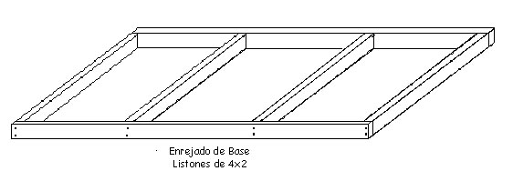
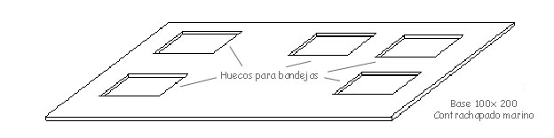
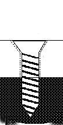
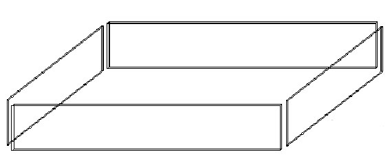
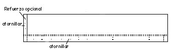
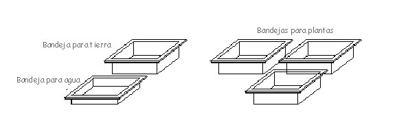

|
MESA PARA
TORTUGAS
Uno de los problemas mayores
para tener tortugas de tierra dentro de casa es el
proporcionar el espacio adecuado para asegurar su bienestar.
Las tortugas, a diferencia de las serpientes, necesitan una
gran cantidad de espacio para estar a gusto, sobre todo si
piensa reproducirlas. Una serpiente puede utilizar casi todo
el espacio de la jaula con la ayuda de unas ramas bien
puestas. Las tortugas, por otro lado, no son muy buenas
trepadoras (aunque son persistentes, y esta persistencia a
veces logra superar cualquier impedimento de alpinismo). Así
que las tortugas necesitan proporcionalmente mayor cantidad de
espacio en el suelo que las serpientes.
Una solución al problema de espacio, es dedicar un cuarto
entero a las tortugas y permitirles libertad para vagar. Sin
embargo, aun cuando disponga de un cuarto libre, algo que la
mayoría de las personas no tienen, hay todavía problemas con
semejante solución. Por ejemplo, las tortugas son más
difíciles observar sin interferir en sus actividades. Los
proyectos y dificultad de mantenimiento son otros problemas
asociados con este alojamiento.
Otra solución ha sido usar acuarios de vidrio de varios
tamaños y formas. Esto pone a las tortugas más cerca de los
ojos. Ellas se acostumbran rápidamente al observador
ocasional, mientras un ambiente óptimo se mantiene fácilmente.
Desgraciadamente, un acuario de cristal de una superficie
suficiente para una tortuga de la tierra mediana pesa mucho,
es difícil de manipular, lo que puede causar problemas con la
limpieza, y es bastante caro.
Una buena solución es la mesa de tortugas, es como un acuario,
pero más grande, más fácil limpiar, y más barato. Hay muchas
maneras de hacerla y si queremos también de decorarla, se
puede poner con patas fijas o sobre caballetes.
Esta que vamos a hacer, descansará sobre unos caballetes.
Tendrá unos huecos recortados en los que pondremos unas
bandejas de plástico de una profundidad mediana, en las cuales
pondremos agua, tierra y, si lo deseamos, alguna planta. Los
huecos están recortados de tal manera que los bordes de las
bandejas apoyen sobre la madera. Con el fin de que las
tortugas no se caigan, se atornillaron en los laterales unas
piezas de plástico transparente. Las bandejas permiten que las
tortugas excaven, beban y, si fueran tortugas pequeñas,
incluso que pongan huevos.
Pero vayamos con la descripción de la manera de hacerla. Las
medidas son meramente orientativas, ya que cada uno la
acoplará a las medidas del espacio de que se disponga. El
ejemplo esta calculado para una mesa de 1 x 2 metros.
Vamos a utilizar contrachapado marino, listones de pino y
plástico transparente. El contrachapado marino es mas caro que
el normal, pero esta preparado para soportar la humedad, y
nuestras tortugas van a producir "humedad".
Lo primero y con el fin de dar un rigidez a la estructura,
hacemos un emparrillado de listones, podemos usar 4x2, los
cortamos a la medida y los atornillamos entre si.

Los listones los pondremos de canto con el fin de que el
armazón tenga mayor rigidez. Comprobaremos que quede bien
escuadrado y sin deformaciones, ya que si hay deformaciones
las vamos a trasmitir luego al tablero que nos va ha hacer de
base y no quedaría bien.
Una vez que hemos realizado el enrejado, preparamos el
tablero. Usamos un contrachapado de 12 mm de 100x200. Y usando
una sierra de calar, realizamos los huecos para las bandejas.
Hay que tener en cuenta dos cosas: Una, que es mejor pecar por
defecto que por exceso. Es decir, que más vale hacer el hueco
mas pequeño e irlo agrandando a base de lima, que hacerlo mas
grande y que la bandeja no apoye y se caiga. La otra, es que
hay que tener en cuenta dónde van los listones del enreiado,
no sea aue el hueco nos coincida con un listón.

Una vez preparado el tablero, lo atornillamos a la base que
hemos preparado anteriormente. Los tornillos los embutimos en
la madera para evitar aristas que puedan causar lesiones. A
falta de un avellanador, lo mejor es usar una broca de metal
del diámetro de la cabeza del tornillo e iniciar un taladro,
sin presionar. Se trata sólo de hacer un hueco en el que entre
la cabeza del tornillo. Hacemos esto con todos los tornillos
que pongamos pero, sobre todo, en los que ponemos en el
interior

Es importante que piense y planifique como va a querer
distribuir su mesa, ya que una vez que realice los cortes, ya
no podrá modificarlos. Tómese un tiempo, piense cómo quiere
que vayan distribuidas, dónde quiere poner el agua, qué tan
fácil va a tener el acceso, qué zona va a reservar como zona
caliente.
Si dispone de una bandeja amplia, tal vez le interese
equiparla con un desagüe, que le puede parecer complicado,
pero que no lo es en absoluto y le va a facilitar mucho las
labores de mantenimiento. Piense como rellenará esa bandeja de
agua. Puede incluso hacer un pequeño plano a escala para
hacerse una idea de cómo va a quedar. O bien, en el hueco que
en el que va a instalar la mesa, ir colocando los distintos
elemento y ver cómo queda y qué distribución es mejor y más
cómoda. Piense que es una mesa grande y no es cómodo tener que
moverla luego.
Si lo desea y con el fin de dar mayor fortaleza, puede
extender una capa de cola blanca a lo largo de todo el
enrejado. Posteriormente, superpone el tablero y procede a
atornillar. La combinación de la cola y los tornillos dará
mayor rigidez a la estructura. Cuando tenga el tableta
atornillado al enrejado, comprobara que ha ganado mucho en
rigidez.

Ahora vamos a poner los laterales. Podemos ponerlos totalmente
de contrachapado o poner alguno de plástico transparente, con
el fin de observar mejor a las tortugas. Personalmente
prefiero que sean todos de madera, ya que es mas fuerte y
sobre todo las tortugas no se empeñan en querer salir por esa
zona transparente. La altura a darles va en función de las
tortugas que vayamos a tener alojadas en la mesa, pero para
evitar problemas, y que pudieran trepar, una altura de 45
centímetros está bien. Tenga en cuenta que cuatro centímetros
van a quedar por debajo del suelo. Son los que quedan a la
altura de la base. Atornillamos todas estas piezas a la base y
en las uniones las atornillaremos entre sí. Si queremos darle
mayor rigidez, pondremos en las esquinas unos listones de 2x2
a los cuales atornillaremos estas tapas.

Una vez montada toda la mesa, colocaremos las bandejas, con el
fin de ver que todo encaja y que no hay problemas. Si alguna
bandeja no encajase, ajustaremos la madera donde haga falta.
También es el momento de ver el tema del desagüe. Lo mejor es
taladrar un agujero en la bandeja y colocar en ella algún
grifo. De esa manera simplemente con abrirlo, vaciamos la
bandeja. Podemos conectarlo a una manguera y así llevamos el
agua donde nos interese. Las bandejas han de tener un reborde
exterior con el fin de que puedan apoyar bien. sobre la
madera, puede usar bandejas de gato, de revelado de
fotografías, u otras que se acoplen. Lo importante es que
ajusten bien y que tengan la profundidad que desee, en
espacial si va a preparar una para posibles puestas, lo que
obliga a un mínimo de profundidad.

Le conviene sellar las uniones, con el fin de evitar fugas de
líquidos. Puede poner un pequeño cordón de silicona y apoyar
sobre él las bandejas, teniendo cuidado que no salga nada
fuera del reborde.
También seria interesante aplicar un sellador en los bordes de
la unión de las paredes con la base, para evitar posibles
fugas.
Y ahora queda el tema del acabado. El contrachapado marino
aguanta humedad, pero mejor lo protegemos. Podemos usar
barnices epóxicos, que una vez que polimerizan, son inertes, o
barnices a base de poliuretano.
Una vez terminada la mesa, sólo debemos de colocarla sobre los
caballetes, que tengamos previstos, llenar de tierra y agua
las bandejas, echar el sustrato que elijamos (bolas de
alfalfa, paja, hojas secas... ), colgar la lámpara de
infrarrojos en el punto caliente y meter a nuestras tortugas.
|